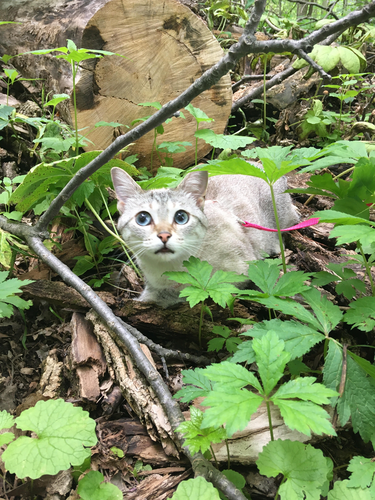

About Me
- Born in South Korea
- "How much would it be different to live in the other side of the world?"
- 4 years of experince working as an educator in 5 - 8 grade classroom settings
- Cat mom


Education
Master of Arts
- STEM Education, specialized in Mathematics
- Thesis: Mathematics teacher in-the-moment noticing: how they use scaffolding practices to support student thinking
- Graduate Research Assistant
- STEMERs
Bachelor of Sciecne in Education
- Middle Childhood Education, specialized in Langauge Arts and Mathematics
Conference Presentations
AMTE Conference
Lee, J. (2018, Feb) Teachers of color and their needs to support equity in Mathematics Education. Paper presented at the Annual Conference of the Association of Mathematics Teacher Educators. Houston, TX.
PME-NA Conference
Lee, J. (2017, Oct). Interplay of representation, beliefs, and problem solving performance. Poster presented at the Annual Meeting of the North American Chapter of the International Group for the Psychology of Mathematics Education. Indianapolis, IN.
Certifications
- Educator License - Middle Childhood Education, language Arts & Mathematics (4-9)
- Google Project Management Certificate
- Scrum Master Certification
- Instructional Design Foundations and Applications Certificate
- Learning Technologies Foundations and Applications
- Python for Everybody Specialization